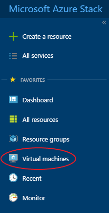
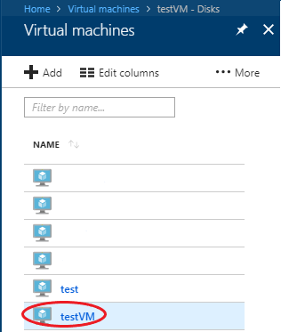
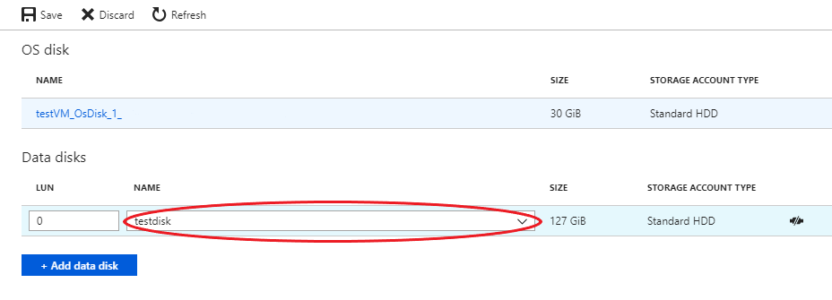
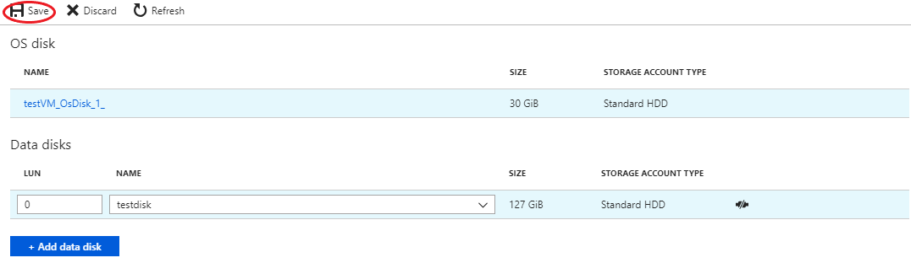
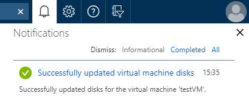

How to add a managed disk to a virtual machine using the UKCloud Azure Stack Hub portal
Overview
UKCloud for Microsoft Azure supports the use of managed disks on virtual machines (VMs). You can use managed disks as both OS disks and data disks.
For more information, see Introduction to Azure managed disks.
The following article shows you how to add a managed disk to a VM using the UKCloud Azure Stack Hub portal.
Intended audience
To complete the steps in this article, you must have appropriate access to a subscription in the Azure Stack Hub portal.
Adding a disk to an existing virtual machine using the Azure Stack Hub portal
Log in to the Azure Stack Hub portal.
For more detailed instructions, see the Getting Started Guide for UKCloud for Microsoft Azure.
In the favourites panel, select Virtual machines.

In the Virtual machines blade, select the VM that you want to add the disk to.

Under Settings, select Disks.
In the Disks blade, select +Add data disk.
If you're adding a pre-existing disk:
Enter the LUN (logical unit number).
Select the disk that you want to add to the virtual machine.

Click Save.

You can monitor the progress of your deployment by clicking the Notifications icon.
When the deployment is finished, the notification will change to Successfully updated virtual machine disks.

You can view the disk by navigating to the VM that the disk was added to, then select Disks.
Feedback
If you find a problem with this article, click Improve this Doc to make the change yourself or raise an issue in GitHub. If you have an idea for how we could improve any of our services, send an email to feedback@ukcloud.com.